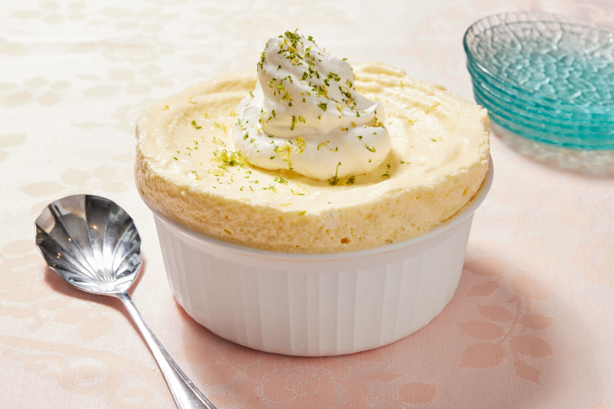

Frozen Lemon Souffle

Description:
This heavenly Lemon and Lime Souffle is a creamy frozen twist on a classic indulgence with refreshing citrus flavor, easy but impressive.
Ingredients:
- 8 large eggs, separated
- 1 cup (8 oz/225 g) granulated sugar
- 2 teaspoons lemon zest
- 2 teaspoons lime zest
- ½ cup (4 fl oz/120 ml) lemon juice, freshly squeezed
- ¼ cup (2 fl oz/60 ml) lime juice, freshly squeezed
- ¼ teaspoon salt
- ⅔ cup (5 fl oz/142 ml) heavy cream
For the garnish
- Whipped cream
- 2 teaspoons lemon and lime zest
Steps
- Cut a piece of aluminum foil large enough to wrap around the outside of a 6-cup (48 fl oz/1500 ml) capacity souffle mold.
- Fold the foil in half lengthwise, then wrap it around the souffle mold so that the foil extends 3 inches (7 ½ cm) above the rim of the mold, and secure it with tape. (Be patient with yourself – it can be easier said than done!) Set aside.
- Place the egg yolks in a medium bowl next to the stove and place a separate clean bowl with a fine mesh sieve on top also near the stove.
- In a medium saucepan over medium-low heat, combine the sugar, zest, and juice and heat until simmering.
- Whisk the egg yolks while adding the hot lemon-lime mixture, one ladleful at a time, until it is incorporated.
- Return the mixture to the saucepan and cook on low heat, stirring constantly for 3 to 5 minutes, until the mixture thickens enough to coat the back of a spoon. Do not let this boil or it can curdle.
- Immediately pass the curd through the sieve, then place the bowl in a larger bowl filled with ice water to cool the mix and stop it cooking. Allow to cool here, stirring occasionally.
- Place the egg whites in the bowl of a stand mixer fitted with a whisk attachment (or use a handheld electric mixer and a medium bowl).
- Whip the whites on medium speed for 2 minutes until foamy and thickened, then increase the speed to high and whip to stiff peaks, 3 to 4 minutes. Fold the whipped whites into the chilled curd using a thin-edged metal spoon.
- In the same bowl used to whip the whites, add the heavy cream and whip on high speed until it reaches medium-stiff peaks, 2 to 3 minutes. Fold this gently into the mixture.
- Pour the souffle into the prepared mold and freeze for at least 6 hours, but preferably overnight.
- Carefully unmold and serve with some softly whipped cream and a little zest. Cover and store leftovers back in the freezer for up to a week.